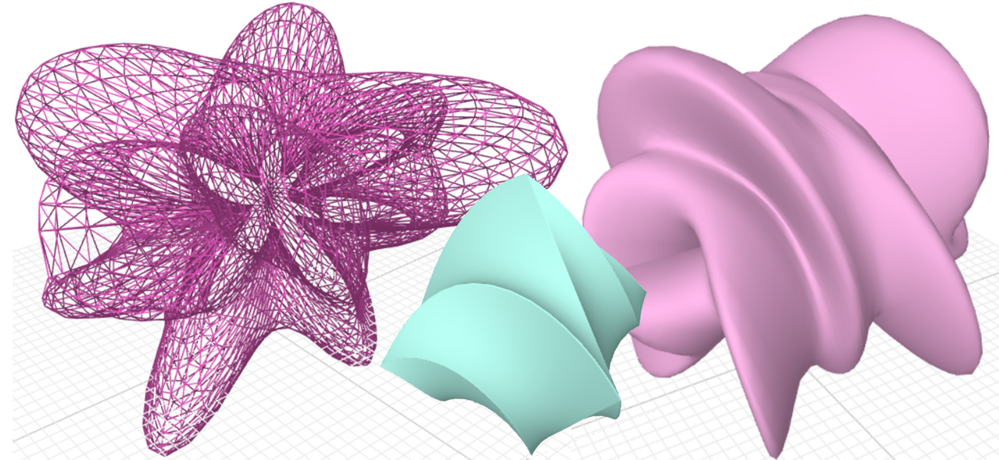
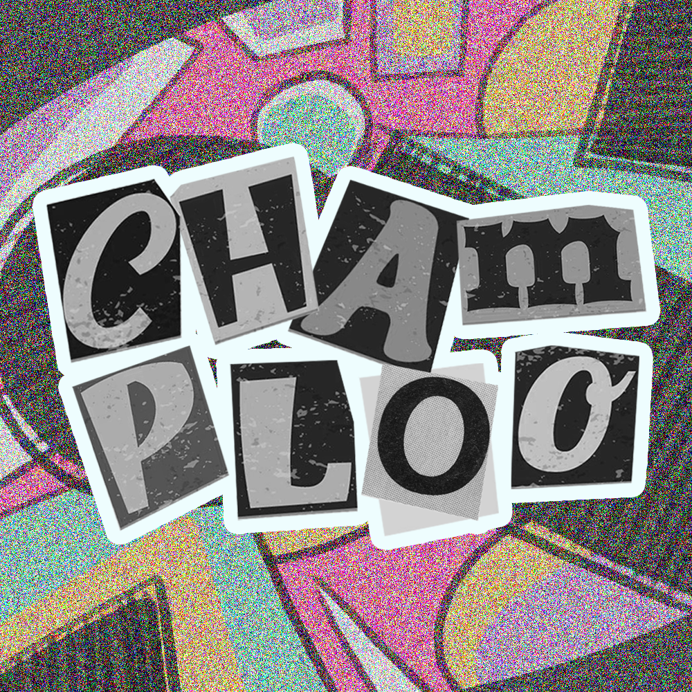
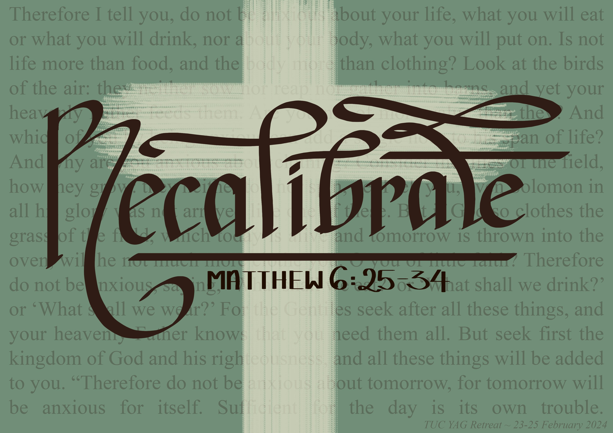
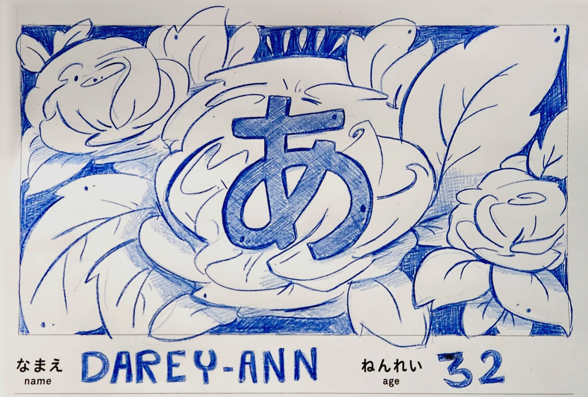

About
こんにちは！I’m Darey-Ann, a graduate student at the University of Tokyo.
I'm originally from Suriname, South-America, and came to Japan on the Japanese Government (MEXT) Scholarship in 2022.
I'm interested in art, technology, and creative coding.
Check out some of my projects below.
Academics
I did my undergraduate in Mathematics at the Anton de Kom University of Suriname. As a MEXT scholar, I did my research student period at the Graduate School of IST, UTokyo. My current stats:
Master of Arts and Sciences in the field of Information Studies
Graduate School of Interdisciplinary Information Studies - Emerging Design and Informatics Course
Thesis: Design Exploration of Camera Monitoring to Foster Trust in Elderly Care Facilities
Lab: DLX Design Lab | Pennington Lab
PhD student
Graduate School of Information Science and Technology - Department of Mechano-Informatics
Research: Integrated human-nature system (work in progess)
Projects
Master's Thesis Project
 March 2026
March 2026
Title: Design Exploration of Camera Monitoring to Foster Trust in Elderly Care Facilities
Abstract:
Japan is rapidly becoming a “super aging society” with the elderly population exceeding 29%
in 2025. This demographic shift places significant pressure on elder care facilities due to severe
understaffing and an increased risk of unsupervised accidents. Although the Japanese government promotes technological solutions, conventional surveillance systems often face ethical and emotional resistance related to privacy, autonomy, and the feeling of being watched.
This research investigates how the design of camera monitoring systems can be redesigned
to foster trust and emotional support for residents in care facilities. The study explores whether
users can be shifted along an “acceptance spectrum,” from passive tolerance to active preference
and trust. Drawing on the Baby Schema (Kindchenschema) and the Technology Acceptance
Model (TAM), the study examines how the perceived usefulness, user control, and camera form
influence acceptance. Using a Research through Design methodology with a mixed-methods, participatory approach, the project progressed through four iterative phases: literature review, user engagement, prototyping, and analysis. Data collection included a perception workshop, a custom “Friendshapes” application to study visual attributes associated with safety and trust, and in-person interviews with residents and staff at elder care facilities by San Ikukai and AS Partners.
The design process produced three interaction categories: nurture, reflect, and connect, with two low fidelity prototypes. The first is a plush companion evoking nurturing responses alongside employing its surveillance functions, and the second is an assistant bot, which offers personal health insights to support user agency. Findings show that acceptance depends on a
“privacy-for-benefit trade-off,” with greater openness when monitoring provides direct value.
Ultimately, this research argues that the discomfort of surveillance is a design challenge
rather than solely an inherent technological limitation. By rethinking the physical form and the
interactive relationship between the device and the resident, surveillance can be transformed
into an ethically aware, supportive service. This study contributes a design framework and a set
of principles to guide the development of future monitoring technologies that prioritize human
dignity and long-term well-being.
Keywords: Well-being Engineering, Elder care, Camera monitoring, Research through Design, Agetech
Friendshapes: A three.js app

February 2025This is an application created to support my ongoing research about camera monitoring acceptance in elder care facilities in Japan
With this app, I've asked people to create a shape that feels safe and trustworthy to them. The app was created by utilizing the mathematical superquadric formula and adding additional parameters to create unique sliders.
This exploration is to discover what the trends are for people around me in choosing "friend shapes" and if this shape language can be translated into the design of monitoring cameras in order to make them more trustworthy.
Try it out here or below.
GIZMO: Blinky Thing
See the GitHub Repository HERE
 February 2025
February 2025
For the Bootcamp at DLX Design Lab, we learned how to work with Arduino Uno. I created a toy that lights up and plays sounds when you touch it. Watch a demo here:
Reimagining New Year's Celebrations Prototype
For the Media Design Course, our group designed a light installation to help people become more aware of their surroundings. This specific design was in response to the growing phenomenon of "smartphone-walking" in Japan.
Here is a short visualization of our project.
Below is an interactive app to showcase how the installation would work. Click on a person to make them look up at the ceiling, or down at their phones. When everyone's looking down at their phones, there's no lightshow.
Champloo: A p5.js Collage App

A standalone p5.js collage application, created for the University of Tokyo's 2024 iii Exhibition.
See more details on my GitHub page.
Double-click to start!
Art
I like digital and traditional art as well. Here are some of my more recent pieces.


